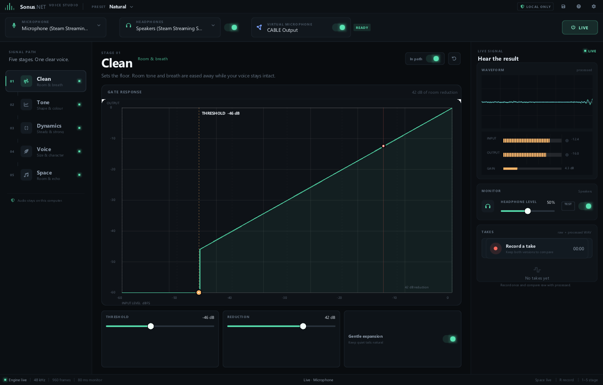
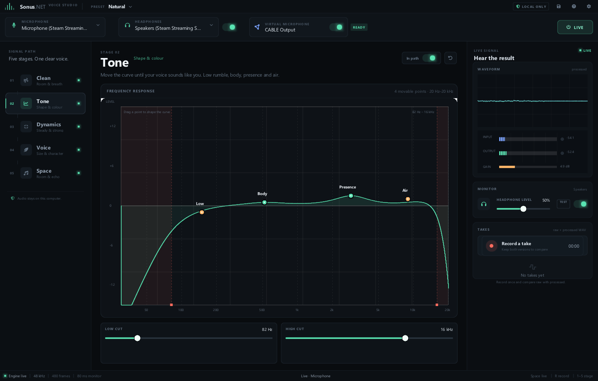
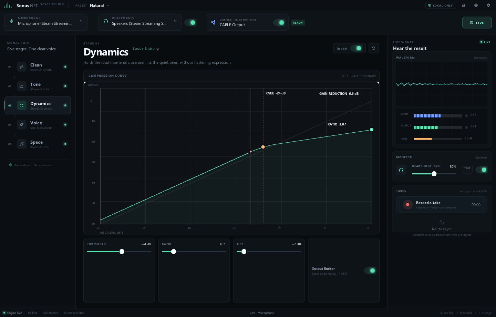
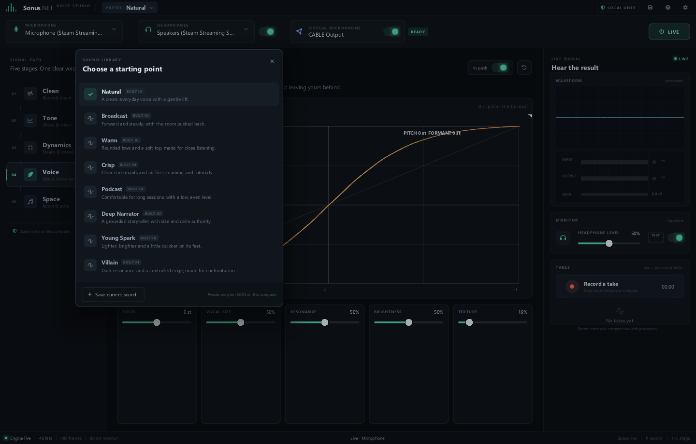

The signal path
Five stages. One voice.
Click any stage in the left rail to open it. The switch in the editor bypasses that stage without losing its settings, so you can hear exactly what it is doing.
Clean
Clean decides what counts as sound and what counts as room. It is the first stage because everything after it sounds better when the microphone floor is quiet.

Controls
- Threshold — the level below which the gate starts closing. Set it just above the room noise, not above quiet speech.
- Reduction — how far the room drops between phrases.
- Gentle expansion — eases quiet tails instead of cutting them abruptly.
Tone
Tone is the main frequency-shaping view. The graph is not a picture of an EQ; it is the EQ. Each point can be dragged horizontally for frequency and vertically for gain.

How to use it
- Start with the cuts. Raise Low cut until rumble and handling noise disappear. Lower High cut if the top is hissy or harsh.
- Find the body. Drag the Body point up or down around 400–700 Hz. Too much sounds muddy; too little sounds thin.
- Add presence. A small lift around 2–4 kHz helps the voice cut through a mix or a stream.
- Use air sparingly. The Air point is a shelf above the voice. A little opens the sound; too much emphasises hiss.
For a natural result, keep the curve close to the centre line. Small moves are usually more convincing than large ones.
Dynamics
Dynamics holds the loud parts and lifts the quiet parts. The graph shows the static compression curve: input level across the bottom, output level up the side.

Controls
- Threshold — where steady control begins. Lower thresholds compress more of the voice.
- Ratio — how strongly peaks above the threshold are held. 3:1 is a useful speech starting point.
- Lift — make-up gain added after compression.
- Output limiter — keeps the final output below full scale. Leave it on for a safety net.
Voice
Voice is where Sonus stops being a microphone cleaner and becomes a voice-design instrument. Pitch, formants, resonance, brightness and texture are separate controls because they do different things.

Pitch vs vocal size
| Control | What changes | What it is useful for |
|---|---|---|
| Pitch | The fundamental note, −12 to +12 semitones. | Deeper narrators, higher characters, subtle gender presentation. |
| Vocal size | The spectral envelope and formant resonances, independent of pitch. | Smaller/younger voices, larger creatures, a different vocal tract. |
| Resonance | Body and forwardness around the vocal centre. | More chest, more presence, a darker or more projected voice. |
| Brightness | High-frequency character. | Airy and open, or dark and close. |
| Texture | Harmonic weight and grit. | Warmth, roughness, aggression, a more animated character. |
Space
Space places the voice in an environment. It is deliberately separate from the Voice stage so you can change the room without losing the character.

Controls
- Room — the amount of short room around the voice.
- Room mix — the balance between the dry voice and the room.
- Echo — a single repeat behind the voice. Small amounts add depth; larger amounts become a character effect.
- Echo time — the distance between the voice and the repeat.
For a natural room, keep the room subtle and the echo low. For a creature, cave or announcement voice, push both further.
Building a character voice
Start from a character preset in the sound library, then refine it against your own voice.
- Pick a starting point. Try Deep Narrator, Young Spark, Villain or Creature.
- Set the size. Move Vocal size first. It changes the perceived body more convincingly than pitch alone.
- Set the pitch. Move Pitch a little at a time. Extreme pitch shifts quickly sound artificial.
- Shape the detail. Use Resonance for chest/forwardness, Brightness for dark/open, Texture for smooth/gritty.
- Place it. Add Room and Echo in Space.
- Save it. Use the save button in the top bar to store the sound as a local preset.
